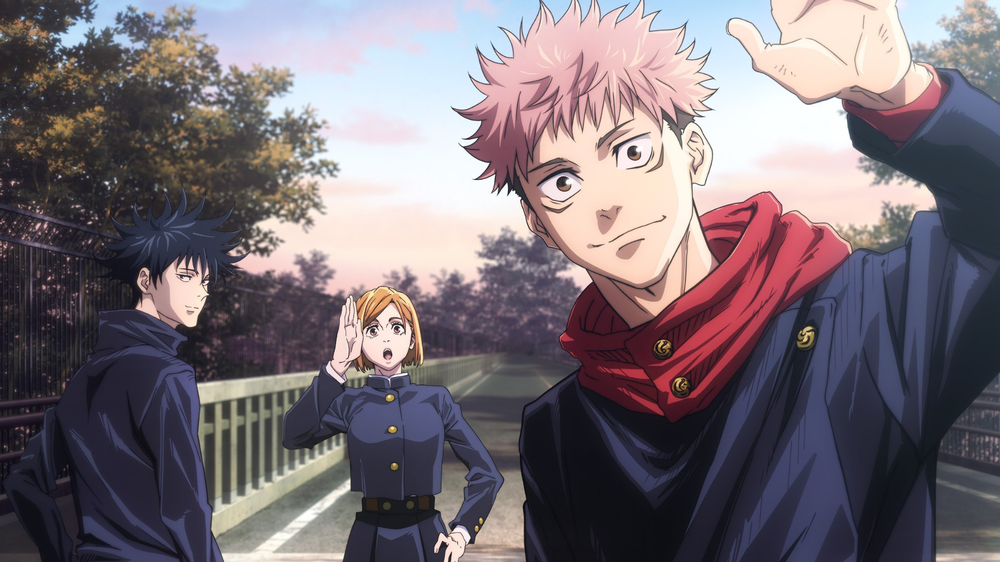

Jujutsu Kaisen information
Jujutsu kaisen is a Japanese manga series written by Gege Akutami. The manga has been published since March 2018 in the Japanese Manga Stores. Gege Akutami is the pen name of the mangaka (manga artist) behind "Jujutsu Kaisen." Not much is known about the author's personal life, as they prefer to keep a low profile. Akutami's work on "Jujutsu Kaisen" has been well-received for its unique take on the shōnen genre, combining elements of horror, action, and supernatural themes. "Jujutsu Kaisen" has received critical acclaim for its well-developed characters, intricate plot, and intense fight sequences. The series has been adapted into an anime, further boosting its popularity. The anime adaptation has been praised for its animation quality and faithfulness to the source material.

Story Line
The story starts with the main protaganist Itadori Yuji. He followed a normal schoolday where he crossed paths with Megumi Fushiguro. He is a Jujutsu Scorcerer who whas send there on a missionn to retrieve a special cursed object what whas knows as Ryomen Sakuna's finger. In the battle between Megumi and de curses Yuji founded him self where he ate the special grade object. Because of that incident he found him self at the Jujustu school where he now had a responsibility to find the remained cursed objects. Together with the other Students he met at Jujutsu High they train to become better scorcerers and take down curses. With his friend Megumi and Nobara he go's on a dangerous journy full of major setbacks and discoveries.